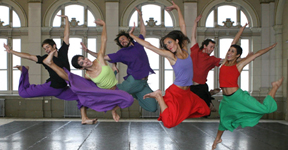
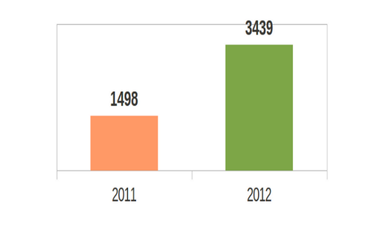
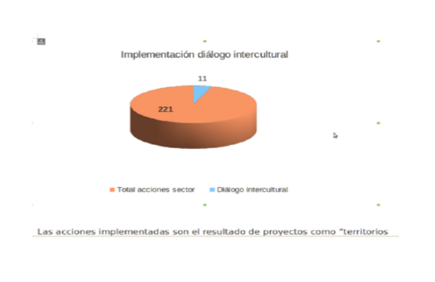

Secretaría de Cultura Recreacion y Deporte

Se revitaliza el monumento a Gonzalo Jiménez de Quesada
El Instituto Distrital de Patrimonio Cultural (IDPC) está adelantando acciones de conservación en el monumento a Gonzalo Jiménez de Quesada. La intervención comprende la limpieza general, eliminación de pintura y grafitis, procesos de desinfección y emboquillado y sustitución de gravilla y piedras.
Taller de formación para cine clubes
La Cinemateca Distrital realizará un taller de formación para cine clubes en la Biblioteca Pública Parque El Tunal, en donde se analizarán los conceptos fundamentales para la gestión, programación y desarrollo de estrategias de comunicación y visibilización de estos espacios.
Secretaría de Cultura Recreacion y Deporte
01.Sep.2013
TEMPORADA DE MÚSICA IDARTES - TEATRO AL AIRE LIBRE LA MEDIA TORTA SONIDOS DEL MUNDO DOMINGO 1 DE SEPTIEMBRE DE 2013
Taller de formación para cine clubes
La Cinemateca Distrital realizará un taller de formación para cine clubes en la Biblioteca Pública Parque El Tunal, en donde se analizarán los conceptos fundamentales para la gestión, programación y desarrollo de estrategias de comunicación y visibilización de estos espacios.
13.Jun.2013
CONVOCATORIA CINEMATECA RODANTE USAQUÉN - TALLER DE FORMACIÓN INTEGRAL EN REALIZACIÓN - FICCIÓN
Secretaría de Cultura Recreacion y Deporte
Jueves 29 Agosto 2013
8:00am
Comité Sectorial en la SCRD ::
11:00am
Seguimiento dirección de la BIblioteca Julio Mario Santo Domingo ::
3:00pm
Comité Ciudad Creativa de la Música ::
Viernes 30 Agosto 2013
8:00am
Comité Sectorial en la SCRD ::
11:00am
Seguimiento dirección de la BIblioteca Julio Mario Santo Domingo ::
3:00pm
Comité Ciudad Creativa de la Música ::
Secretaría de Cultura Recreacion y Deporte

Producción artística estimulada
La producción artística y cultural es entendida como la creación de obras artísticas, iniciativas y proyectos culturales; la investigación así como la propuesta de un proceso de formación se consideran parte de la producción en tanto constituyen una creación

Diálogo intercultural en el sector
El diálogo intercultural es el encuentro entre las diferencias, entre personas de grupos étnicos o edades diferentes, de nivel socioeconómico diferente, o de adscripciones identitarias diversas.
Secretaría de Cultura Recreacion y Deporte
Secretaría de Cultura Recreacion y Deporte
Secretaría de Cultura Recreacion y Deporte